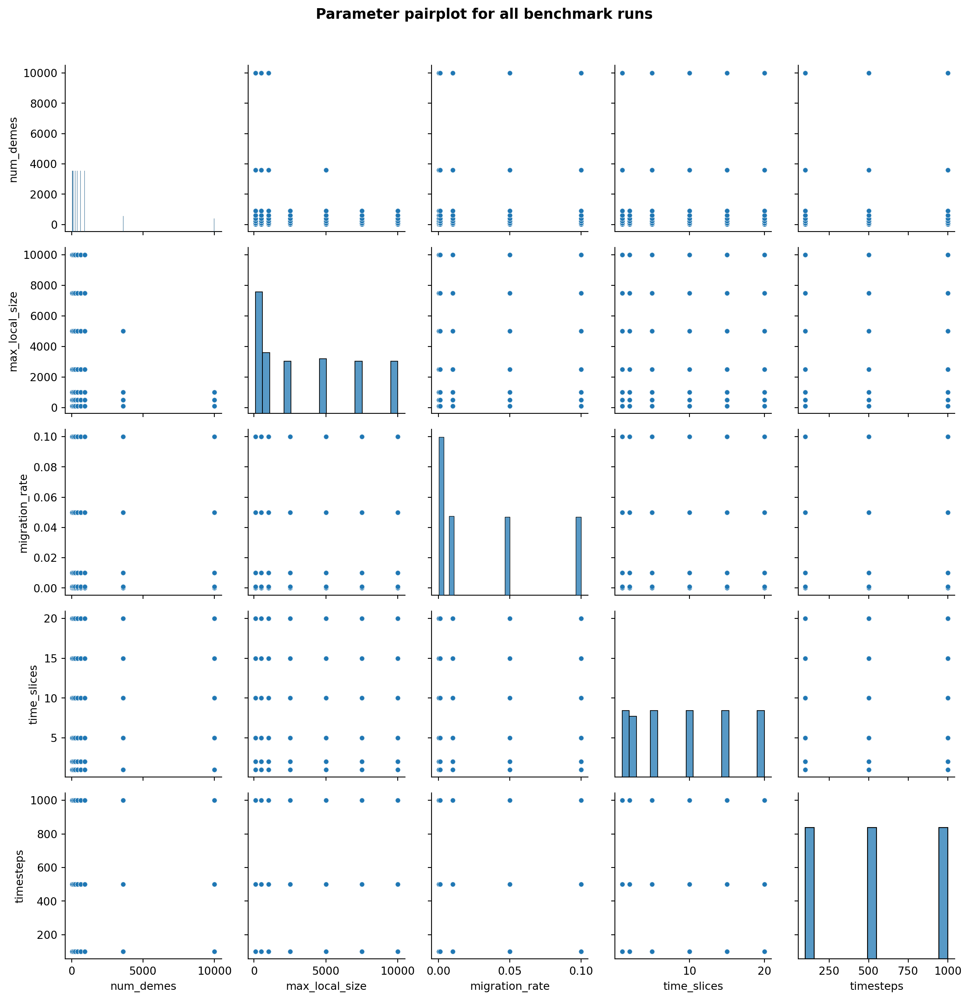
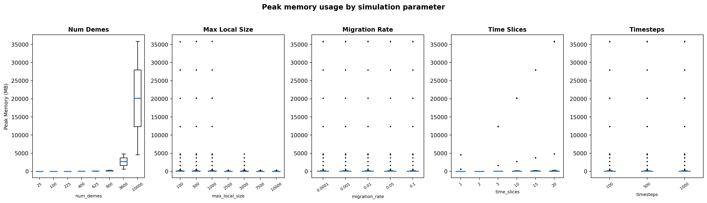
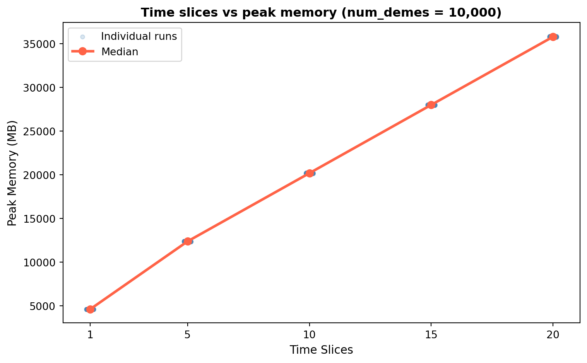
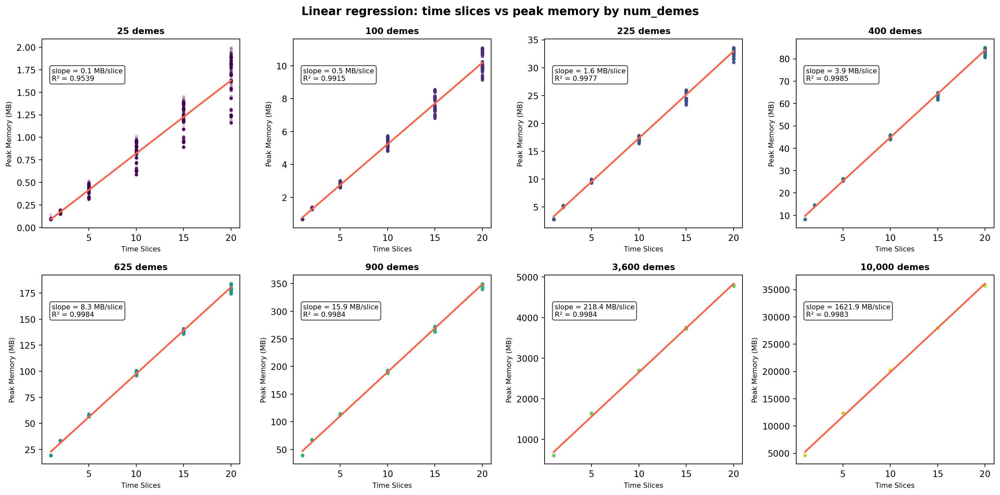
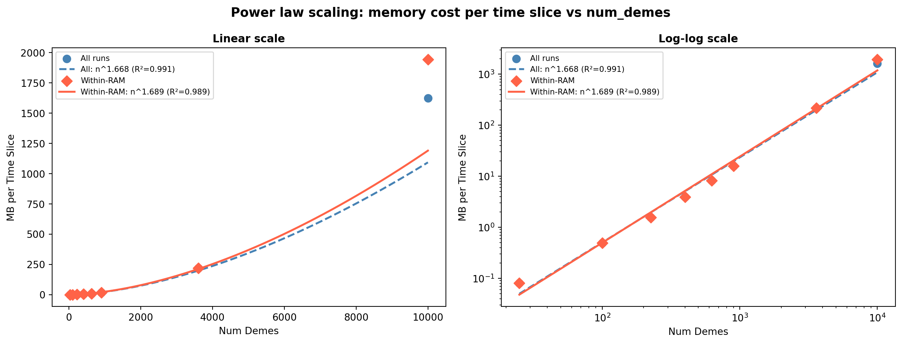
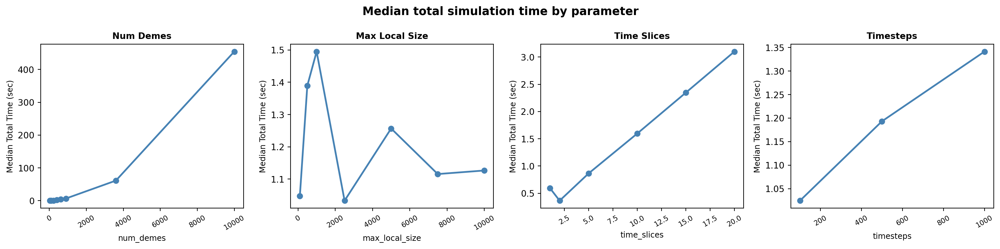
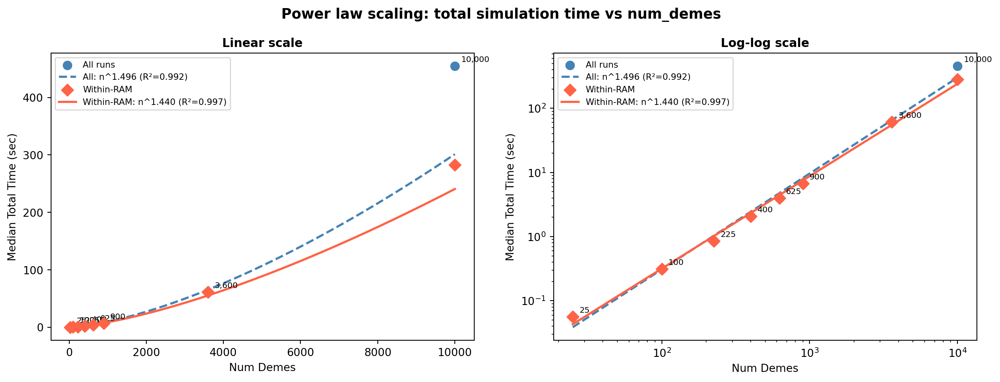
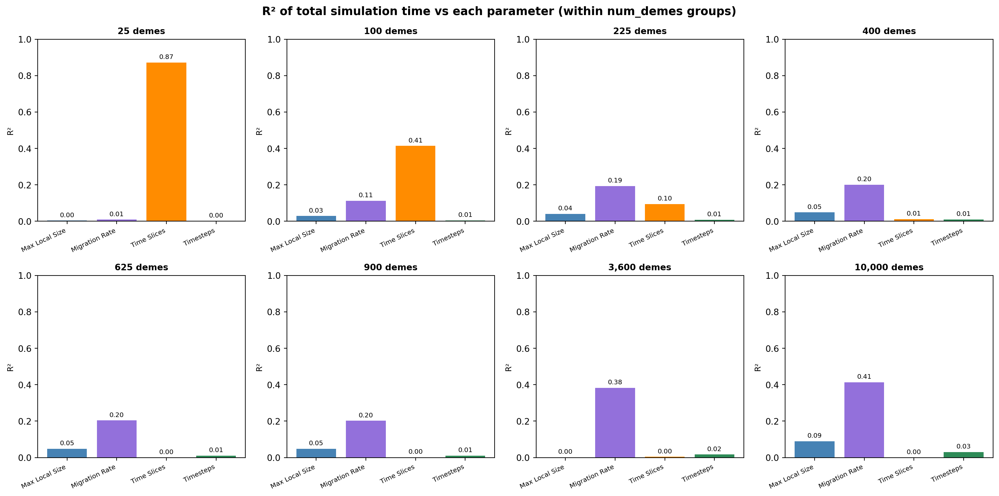
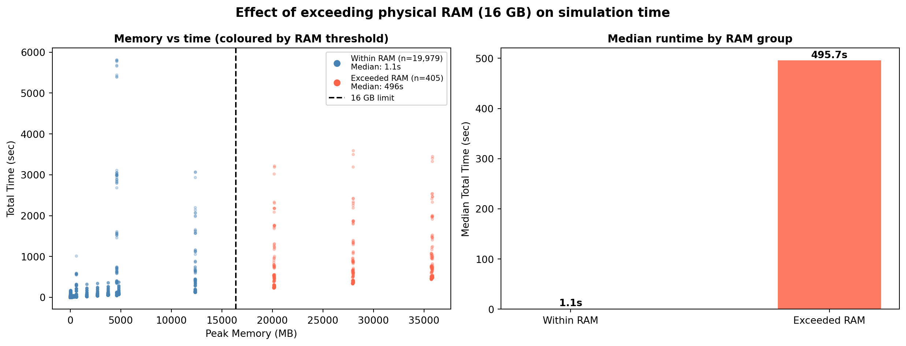

| Simulation parameter ranges | ||
| Parameter | Unique values tested | N levels |
|---|---|---|
| Num Demes | 25, 100, 225, 400, 625, 900, 3600, 10000 | 8 |
| Max Local Size | 100, 500, 1000, 2500, 5000, 7500, 10000 | 7 |
| Migration Rate | 0.0001, 0.001, 0.01, 0.05, 0.1 | 5 |
| Time Slices | 1, 2, 5, 10, 15, 20 | 6 |
| Timesteps | 100, 500, 1000 | 3 |
Spaceprime Benchmarking Results
Note
This report was generated using AI under general human direction. At the time of generation, the contents have not been comprehensively reviewed by a human analyst.
Introduction
This report presents a full scaling analysis of spaceprime benchmark runs conducted on 2026-04-25. The benchmarks systematically varied five simulation parameters across multiple replicates to characterise how runtime and memory usage scale with landscape complexity.
The raw dataset contains 20384 runs spanning the following parameter ranges:
The full parameter space coverage is visualised in the pairplot below.

Memory usage analysis
Effect of each parameter
The boxplots below show the distribution of peak memory usage across the levels of each simulation parameter.

Time slices as the dominant driver of memory
Within the largest grid configurations (num_demes = 10,000), time_slices emerges as the primary driver of memory usage, with a near-perfectly linear relationship.

Linear regression of memory vs time slices per num_demes group
A linear regression of peak memory on time_slices was fitted within each num_demes group. Fits are excellent across all groups (R² ≥ 0.95), confirming a consistent linear memory cost per additional time slice.

Power law scaling of memory cost per time slice
The memory cost per time slice (slope from each group’s regression) itself follows a power law with num_demes. The fit was performed on within-RAM runs to avoid bias from swap-impacted configurations.

Within-RAM fit: MB/slice = 2.08e-04 × num_demes^1.689 (R²=0.9893)The memory cost per time slice scales as approximately num_demes^1.69 (within-RAM runs), sitting between linear and quadratic — consistent with storage of a migration matrix that grows with the number of deme pairs.
Total simulation time analysis
num_demes as the dominant driver
Unlike memory, total simulation time is primarily driven by num_demes itself rather than time_slices.

Power law scaling of total time with num_demes

Within-RAM fit: time = 4.18e-04 × num_demes^1.440 (R²=0.9967)Total simulation time scales as approximately num_demes^1.44 (within-RAM runs). Doubling num_demes increases runtime by ~2^1.44 ≈ 2.7×. The within-RAM fit is tighter (R²=0.997) than the all-runs fit (R²=0.992), confirming that swap-impacted runs inflate the apparent exponent.
Within-group variance: migration rate as secondary driver
Within each num_demes group, migration_rate is the strongest remaining predictor of total simulation time.

Migration rate × num_demes interaction model
A linear model including a migration_rate × num_demes interaction term was compared against simpler models to assess explanatory power.
Model R² (all runs) R² (within-RAM)
migration_rate only 0.0120 0.0081
num_demes only 0.3607 0.2444
num_demes + migration_rate 0.3738 0.2535
num_demes + migration_rate + interaction 0.6004 0.5187Adding the interaction term raises R² from ~0.37 to ~0.60 (all runs) and ~0.52 (within-RAM), confirming that migration rate’s effect on runtime amplifies with grid size. The remaining unexplained variance in within-RAM runs is attributed to stochastic variation in coalescent events.
RAM threshold effect
The benchmark machine has 16 GB of physical RAM. Runs whose peak memory exceeded this threshold triggered OS swap, causing dramatic and unpredictable slowdowns.

Slowdown factor: 441×Runs that exceeded 16 GB RAM were 441× slower at the median, with much higher variance — the hallmark of unpredictable swap behaviour. These runs are flagged in the notes column of the cleaned dataset.
Summary
Metric All runs Within-RAM only Cost of 2× num_demes Cost of 10× num_demes
Peak memory — MB/slice power law 2.32e-04 × n^1.668 (R²=0.9912) 2.08e-04 × n^1.689 (R²=0.9893) ×3.22 ×48.9
Total time — power law 3.14e-04 × n^1.496 (R²=0.9922) 4.18e-04 × n^1.440 (R²=0.9967) ×2.71 ×27.5
Interaction model R² 0.6004 0.5187 — —Key findings:
- Memory scales as
num_demes^1.69per time slice — between linear and quadratic, consistent with migration matrix storage costs growing with the number of deme pairs. - Total simulation time scales as
num_demes^1.44— slightly more favourable than memory, meaning memory becomes the binding constraint before runtime at large grid sizes. - Migration rate is the strongest secondary predictor of runtime; its effect amplifies with grid size (interaction R²=0.52 within-RAM), likely due to increased coalescent event tracking in highly connected large landscapes.
- Runs exceeding 16 GB RAM (n=405) experience severe swap-induced slowdowns (median 441×) and should be treated as a separate performance regime.
Practical recommendations
- Keep
num_demes≤ 3,600 on a 16 GB machine to stay within physical RAM for alltime_slicesvalues tested. time_slicesis the primary memory lever — reduce it first if memory is a constraint.- High migration rates incur a runtime cost that grows with grid size; use the lowest migration rate scientifically justified for large grids.
- For grids with >3,600 demes, plan for HPC resources with >16 GB RAM to avoid swap thrashing.